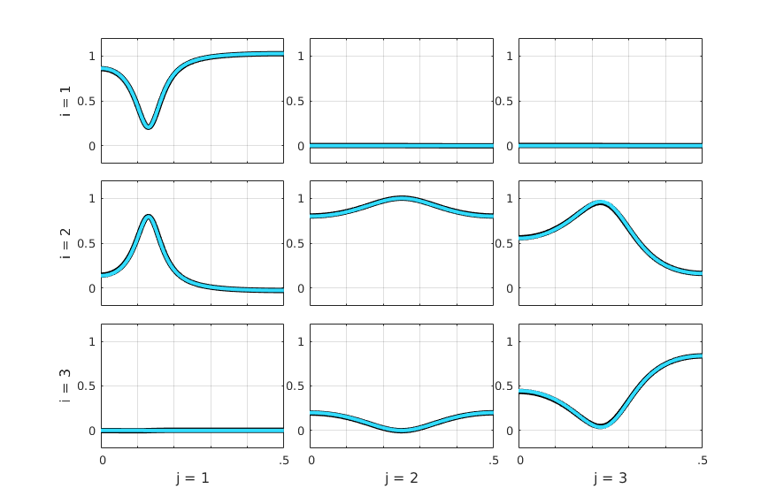
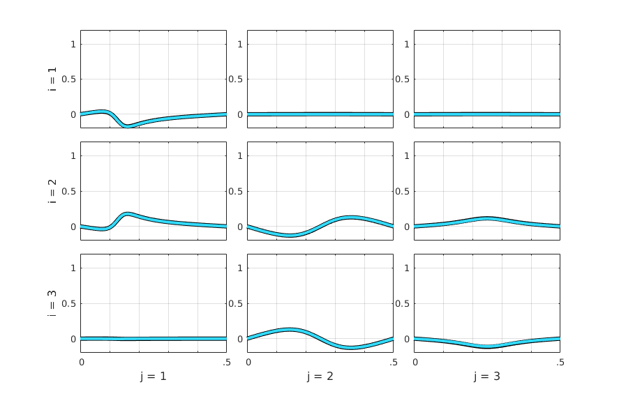
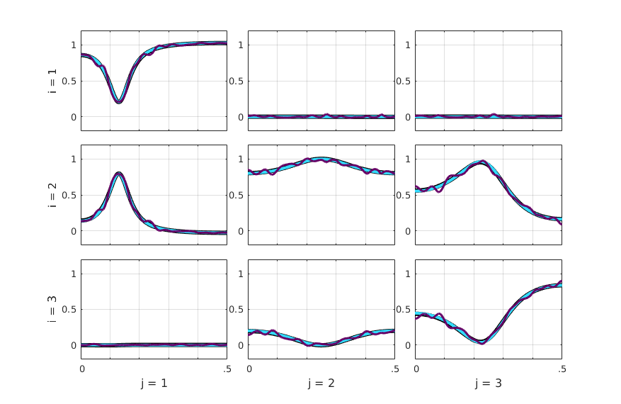
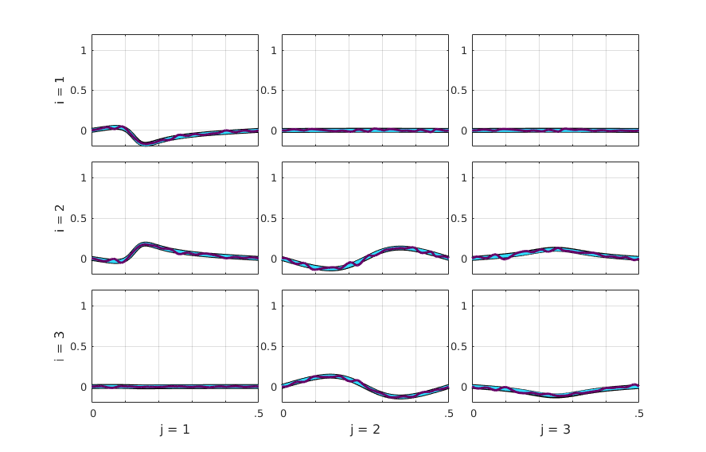
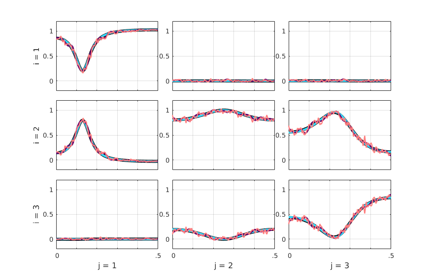
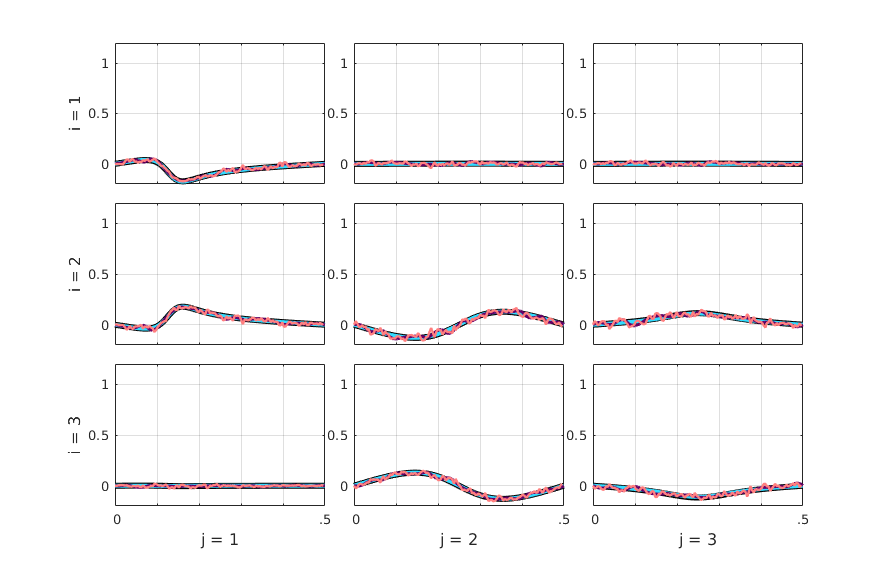
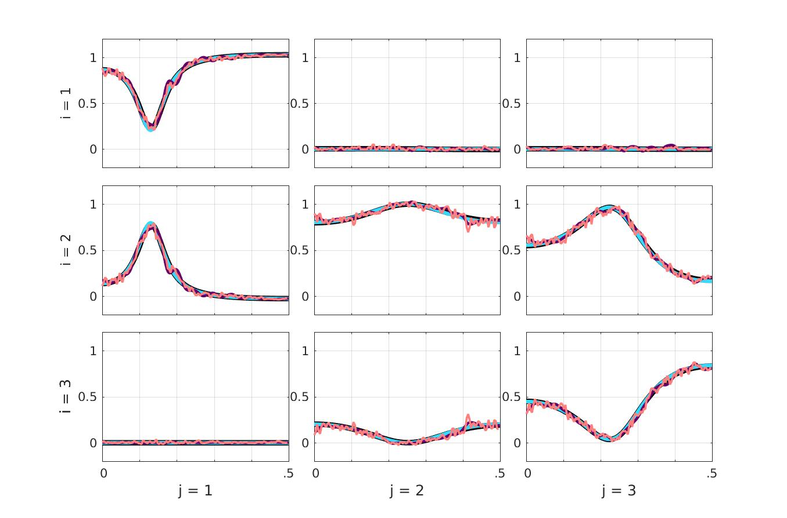
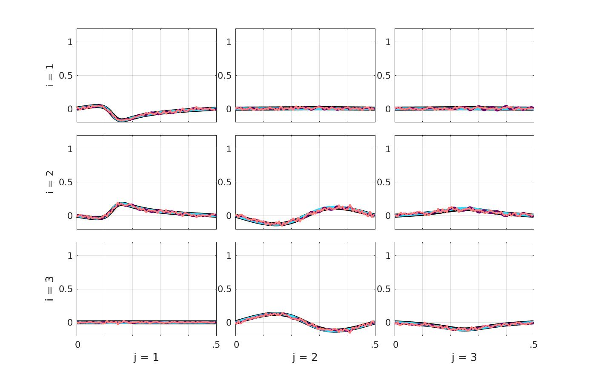
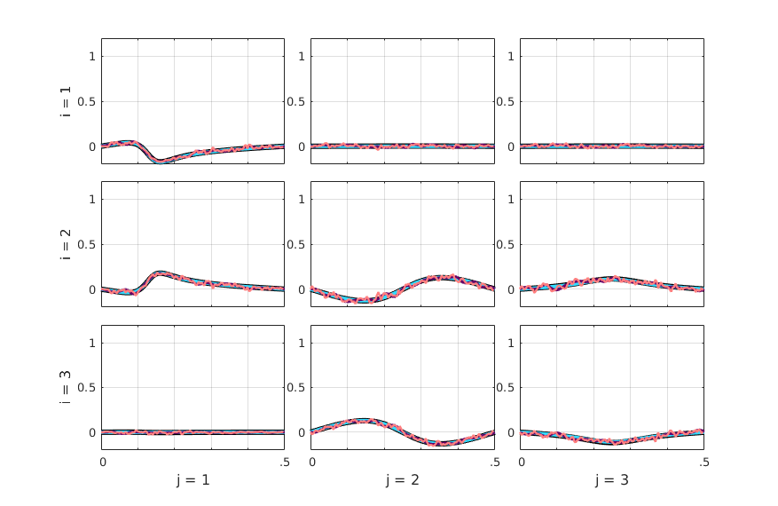

EXAMPLE 3 -- Vector Autoregressive Model (VAR)
This is part of supplemental material accompanying the article of the Special Issue of Frontiers in Network Physiology on Research Topic in *Network Physiology, Insights in Information Theory: 2021*:
Baccala LA, Sameshima K (2022). Partial Directed Coherence and the Vector
Autoregressive Modelling Myth and a Caveat. Front. Netw. Physiol. 2:845327
<https://doi.org/10.3389/fnetp.2022.845327>This script should run on any recent version of MATLAB and also in most recent versions of Octave. It was partially tested under Windows, Mac OSX and Linux environments with MATLAB version 7.0 and higher, and with Octave versions 6.3.0 and 6.4.0 under Linux Ubuntu 18.04. See Readme file for license terms.
See also EXAMPLE1, EXAMPLE2, EXAMPLE4 | Example1.html | Example2.html | Example4.html |
Contents
- Start of Example 3 script
- Choosing Wilson factorization routine
- Set parameters for VAR model
- Line width & color space for plotting four measures
- Setting figures size for 3-by-3 subplot layout
- Initialize figures with size and position to handle different screen sizes
- Plotting sequence: VAR(black), Theo(blue), VMA(dark-purple), WN(red)
- Plot 1 : Theoretical (blue lines)
- Plot 2 : VMA (dark-purple lines)
- Plot 3 : VAR (black lines)
- Plot 4 : WN -- Nonparametric Wilson factorization estimate (red lines)
- Figure 3A - total Partial Directed Coherence real
- Figure 3B - total Partial Directed Coherence real
- Position the figure windows on screen for better visualization
- To export the figures, uncomment following four lines, then rerun this script.
- Clear local variables and parameters preparing for next Example's script.
Start of Example 3 script
Note that existing figure windows are not close.
disp('===========================') disp(' Example 3') if isOctave() warning off end
===========================
Example 3
Choosing Wilson factorization routine
flgWilson = 1; % 1: Awilson.m (in-house); 2: specfactorization_wilson.m by [1]. % % [1] Henderson JA, Dhamala M, and Robinson PA (2021). Brain dynamics % and structure-function relationships via spectral factorization % and the transfer function. NeuroImage, 235:117989.
Set parameters for VAR model
A(:,:,1) = [1.27 0 0;
0.64 0 1;
0.32 0 .5];
A(:,:,2) = [-0.81 0.00 0.00;
-0.41 0.00 0.00;
-0.20 0.50 -0.64];
B =[];
pf = [1.000 0.500 0.250;
0.500 2.250 1.125;
0.250 1.125 3.562];
% Data sample size and frequency scale resolution
Ndata = 1024*4*4;
NFreqs = 1024;
% Data generation
[y,seed_out,epsilon0] = datagenAB(A,B,pf,Ndata,1); % Note B=[].
Line width & color space for plotting four measures
% Line width in point lWidth = [3.003 2.257 4.507 1.752]; % Theo VMA VAR WN -- measure % blue dark-purple black red -- line color % Line color in RGB color model C = [0.1961 0.8627 1.0000; % blue Theoretical 0.4 0 0.4; % dark-purple VMA 0 0 0; % black VAR 1.0000 0.4980 0.4980]; % red WN (Wilson estimate)
Setting figures size for 3-by-3 subplot layout
% Screen dimension in pixel. set(0,'units','pixels'); sz = get(0,'ScreenSize'); % Ad hoc checking for the presence of multiple monitors. khmon = round(sz(3)/1920); % Guessed # of horizontally tiled screens if khmon == 0, khmon = 1; end kvmon = round(sz(4)/1000); % Guessed # of stacked screens if kvmon == 0, kvmon = 1; end % Obtaining (2x2) subplot figure relative height to position Example 3 figures. % For 1920x1000 pixels screen size in Example 1, the Figure Window dimensions % are set to be 576x378 pixels. pxheight2x2 = 378; pxheight2x2 = pxheight2x2*sz(3)/1920; rheight2x2 = pxheight2x2/sz(4)/khmon/kvmon; % Check whether 'Example1.m' was executed to use Figure 1 dimension information. if exist('h1')==2 set(h1,'units','normalized') pos1 = get(h1,'position'); dheight = pos1(2)/3; clear pos1 else dheight = (1.0 - rheight2x2)/3; % Vertical windows spacing end % Set figures size for 3-by-3 subplot layout % Scale figure size on screen according to the monitor resolution % This has been implemented as 'tilefigs.m' does not work in Octave. % Reference monitor has width=sz(3)=1920 pxls pxwidth3x3 = 877; pxwidth3x3 = pxwidth3x3*sz(3)/1920; pxheight3x3 = 570; pxheight3x3 = pxheight3x3*sz(3)/1920; % What follow is a kludge solution to determine figure size in normalized units % that allows handling the cases of multiple monitors set up in Octave (Ubuntu). rwidth3x3 = pxwidth3x3/sz(3)/khmon/kvmon; rheight3x3 = pxheight3x3/sz(4)/khmon/kvmon; % Windows horizontal spacing in normalized unit relative to full screen size rspacing = 0.02882; % Target Exampe 3 figure size in centimeters for publication width = 12.0; height = 9.33; % Same x- and y-axis limits for all subplots obtained from previous simulations. alimits = [0 .5 -0.2 1.2];
Initialize figures with size and position to handle different screen sizes
% Create and position Figure 3A initially at the top of screen h5 = figure; if isOctave() set(h5,'NumberTitle','off','MenuBar','none', ... 'Name','Example 3 Figure A - tPDC real','units','normalized', ... 'position',[rspacing/khmon (1 - rheight3x3) rwidth3x3 rheight3x3]) else set(0,'units','centimeters'); szcm = get(0,'ScreenSize'); set(h5,'NumberTitle','off','MenuBar','none', ... 'Name','Example 3 Figure A - tPDC real','units','centimeters', ... 'position',[szcm(3)/4-width/2 szcm(4)/2-height/2 width height]) end % Create and position Figure 3B initially at the top of screen h6 = figure; if isOctave() set(h6,'NumberTitle','off','MenuBar','none', ... 'Name','Example 3 Figure B - tPDC imag','units','normalized', ... 'position',[2*rspacing/khmon+rwidth3x3 1-rheight3x3 ... rwidth3x3 rheight3x3]) else set(h6,'NumberTitle','off','MenuBar','none', ... 'Name','Example 3 Figure B - tPDC imag','units','centimeters', ... 'position',[3*szcm(3)/4-width/2 szcm(4)/2-height/2 width height]) end % Change the 'units' to 'normalized'. set(h5,'units','normalized', ... 'position',[rspacing/khmon 1-rheight3x3 rwidth3x3 rheight3x3]) set(h6,'units','normalized', ... 'position',[2*rspacing/khmon+rwidth3x3 1-rheight3x3 ... rwidth3x3 rheight3x3])
Plotting sequence: VAR(black), Theo(blue), VMA(dark-purple), WN(red)
N = length(lWidth); % Number of plotted measures kk = 0; for k = [3 1 2 4] flghold = (kk == 0); kk = kk+1; flgYaxis = (kk == N || k==3); % Set y-axis limits on the first plot. switch k
Plot 1 : Theoretical (blue lines)
case 1
disp('===========================') disp(['(' int2str(kk) ') Theoretical : blue']) [SS,VT,Coh] = SS_alg_AB(A,eye(3),pf,NFreqs,1); ct = wasymp_pdc(y,VT,pf,1024,'info',0,SS); [pdct,pdc,pdcr,pdcp,spdc,y0i] = pdc_tot_p(ct.pdc,pf); figure(h5) standplotx2(real(pdct),[],alimits,flghold,C(k,:),flgYaxis,lWidth(k)) drawnow; shg; pause(.1) figure(h6) standplotx2(imag(pdct),[],alimits,flghold,C(k,:),flgYaxis,lWidth(k)) drawnow; shg; pause(3)
=========================== (2) Theoretical : blue * Information PDC estimation 
Plot 2 : VMA (dark-purple lines)
case 2
disp('===========================') disp(['(' int2str(kk) ') VMA : dark-purple']) [IP,pfx,Bx,vaic,Vaicv] = vma_best(y,20,1); [SSx,VTx,Cohx] = SS_alg_B(Bx,pfx/Ndata,1024,Ndata); ctx = wasymp_pdc(y,VTx,pfx/Ndata,1024,'info',0,SSx); [pdct,pdc,pdcr,pdcp,spdc,y0i] = pdc_tot_p(ctx.pdc,pfx); figure(h5) standplotx2(real(pdct),[],alimits,flghold,C(k,:),flgYaxis,lWidth(k)) drawnow; shg; pause(.1) figure(h6) standplotx2(imag(pdct),[],alimits,flghold,C(k,:),flgYaxis,lWidth(k)) drawnow; shg; pause(3)
=========================== (3) VMA : dark-purple * Information PDC estimation 
Plot 3 : VAR (black lines)
case 3
disp('===========================') disp(['(' int2str(kk) ') VAR : black']) % Standard VAR estimation using Nuttall-Strand algorithm [IPa,pfa,Aa] = mvar(y,30,1,2); % Information PDC estimation cy = asymp_pdc(y,Aa,pfa,1024,'info',0); [pdct,pdc,pdcr,pdcp,spdc,y0i] = pdc_tot_p(cy.pdc,pfa); figure(h5) standplotx2(real(pdct),[],alimits,flghold,C(k,:),flgYaxis,lWidth(k)) drawnow; shg; pause(.1) figure(h6) standplotx2(imag(pdct),[],alimits,flghold,C(k,:),flgYaxis,lWidth(k)) drawnow; shg; pause(3)
=========================== (1) VAR : black maxOrder limited to 30 IP=1 vaic=530838.670275 IP=2 vaic=505827.769163 IP=3 vaic=505863.704539
Plot 4 : WN -- Nonparametric Wilson factorization estimate (red lines)
case 4
disp('===========================') disp(['(' int2str(kk) ') WN : red']) u = y; [m,~] = size(u); nFreqs = 128; Su = zeros(m,m,2*nFreqs); for i = 1:m for j = 1:m % Beware the order of input arguments x and y is inverted in % MATLAB and Octave versions of cpsd function (bug or feature?). if isOctave() % Additionally, in Octave overlap is expressed in fraction of % windows length, [0, 1), ... Su(i,j,:) = cpsd(u(j,:),u(i,:),hanning(2*nFreqs), ... 0.5,2*nFreqs,1,'twosided'); else % while in MATLAB it should be a number < window length. Su(i,j,:) = cpsd(u(i,:),u(j,:),hanning(2*nFreqs), ... nFreqs,2*nFreqs,'twosided'); end end end % Wilson spectral factorization tol = 1e-6; % Cauchy-type H-infinity error tolerance if flgWilson == 1 disp(['* Using in-house ''AWilson.m'' routine for spectral ' ... 'factorization.']) [Hx,Sigma,Psi_err,kmax] = AWilson(Su,100,tol); else disp(['* Using [1] Henderson et al. (2021)''s' ... ' ''specfactorization_wilson.m'' routine.']) [Hx,Sigma,ps,ps0,converged] = specfactorization_wilson(Su, 1, tol); end Su = 2*pi*Su; ctz = wasymp_pdc(u,Hx,Sigma,nFreqs,'info',0,Su); [pdct,pdc,pdcr,pdcp,spdc,y0i] = pdc_tot_p(ctz.pdc,Sigma); figure(h5) % Set axis limits standplotx2(real(pdct),[],alimits,flghold,C(k,:),flgYaxis,lWidth(k)) drawnow; shg; pause(.1) figure(h6) % Set axis limits standplotx2(imag(pdct),[],alimits,flghold,C(k,:),flgYaxis,lWidth(k)) drawnow; shg; pause(3) end end % saveas(h5,'html/fig_Example3A.jpg') % saveas(h6,'html/fig_Example3B.jpg')
=========================== (4) WN : red * Using in-house 'AWilson.m' routine for spectral factorization. * Information PDC estimation 
Figure 3A - total Partial Directed Coherence real

Figure 3B - total Partial Directed Coherence real

Position the figure windows on screen for better visualization
set(h5,'units','normalized', ... 'position',[rspacing/khmon rheight2x2+dheight-rheight3x3 ... rwidth3x3 rheight3x3]) set(h6,'units','normalized', ... 'position',[2*rspacing/khmon+rwidth3x3 rheight2x2+dheight-rheight3x3 ... rwidth3x3 rheight3x3])
To export the figures, uncomment following four lines, then rerun this script.
% figure(h5) % print -depsc fig_example3_real.eps % figure(h6) % print -depsc fig_example3_imag.eps
Clear local variables and parameters preparing for next Example's script.
clear A* B* C* I* N* P* S* V* Hx m tol u vaic height i j lWidth m nFreqs ... a* c* e* f* k* p* r* s* y* w*